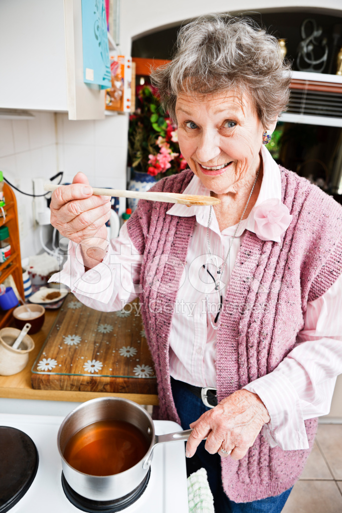

Em 1945, com o fim da Segunda Guerra Mundial, Dona Olga abriu a "Empadas da Dona Olga" em Curitiba.
Em meio ao alívio e esperança do pós-guerra, o cheiro de suas empadas se tornou um símbolo de paz e recomeço para a cidade.
A loja rapidamente virou um ponto de encontro, onde os clientes celebravam o fim da guerra e o início de uma nova era,
fazendo das empadas da Dona Olga um saboroso lembrete de que a vida sempre encontra um caminho para florescer após a adversidade.
Nossa missão é sempre fornecer o melhor produto com o melhor sabor.
Nosso time de funcionarios
Dona Olga
Fundadora

Dona Elizvenya
Cozinheira
Nossos valores
Qualidade: Usamos itens frescos e selecionados
Tradição: Respeitamos as receitas tradicionais e o metado de trabalho
Satisfação do cliente: É nosso principal objetivo, proporcionando experiencias unicas
Inovação: Buscamos sempre novas receitas e sabores